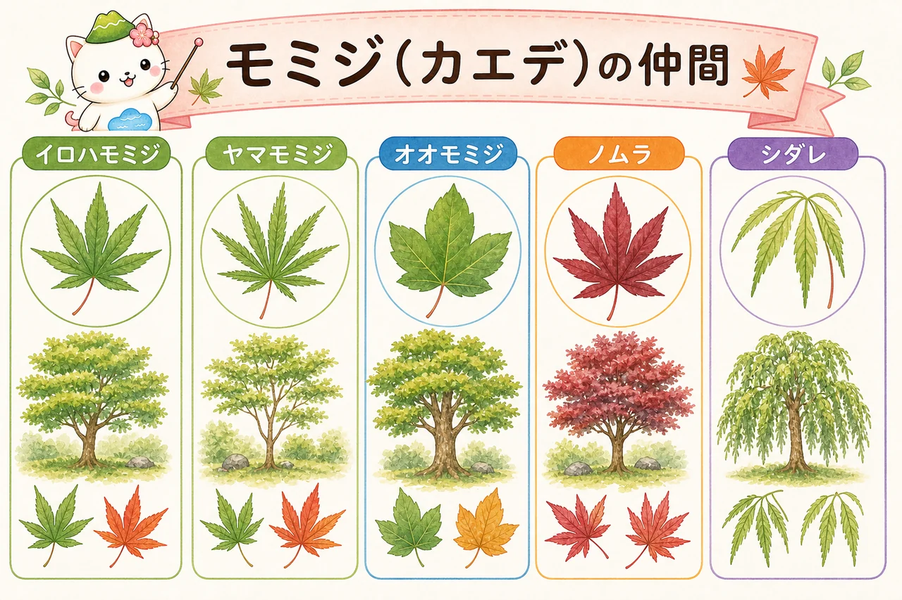
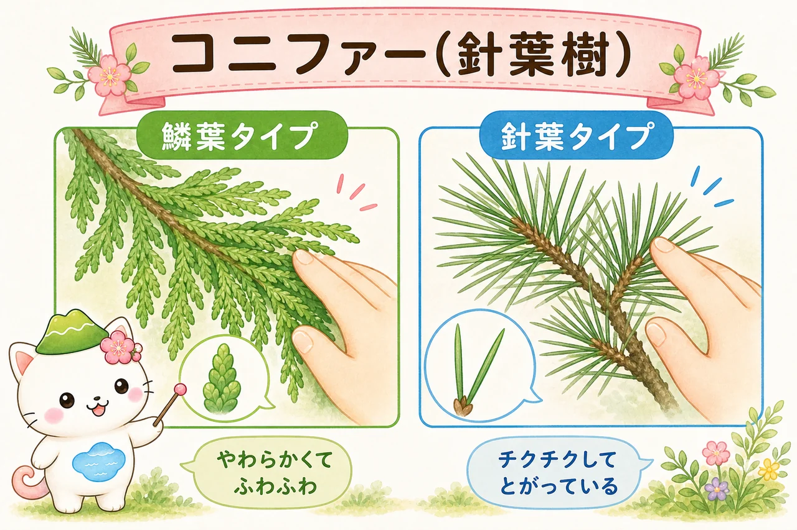
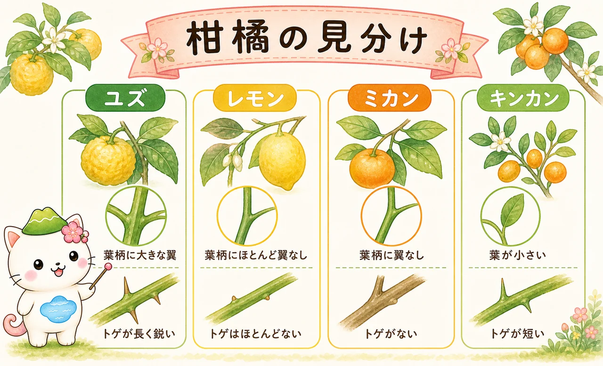
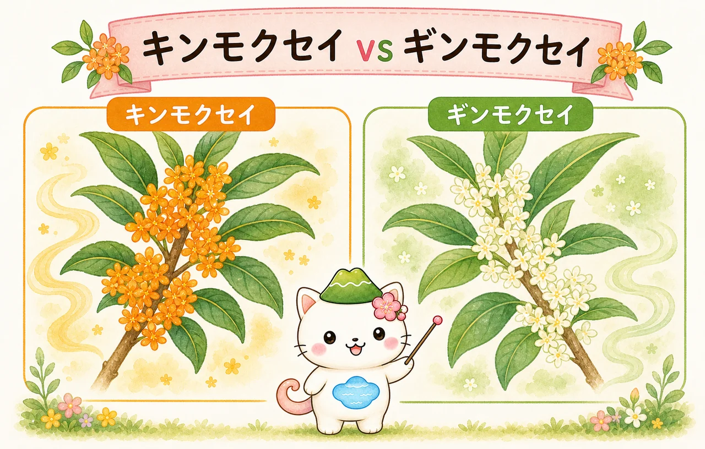
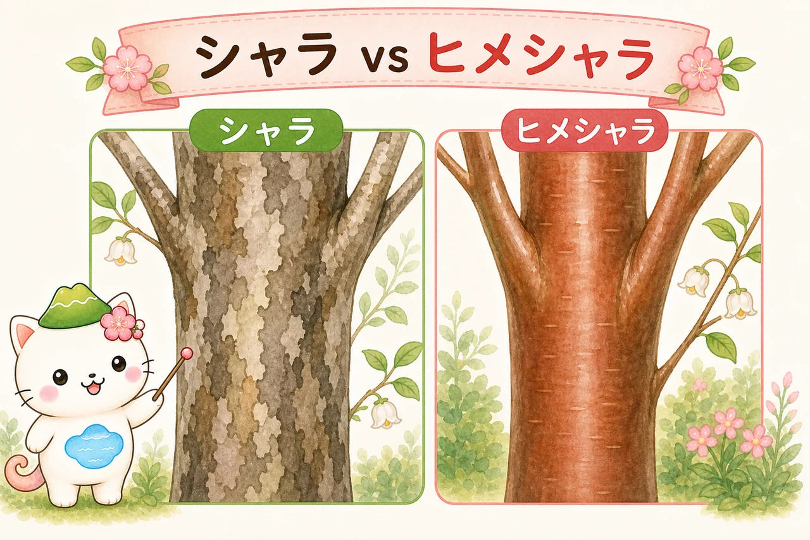
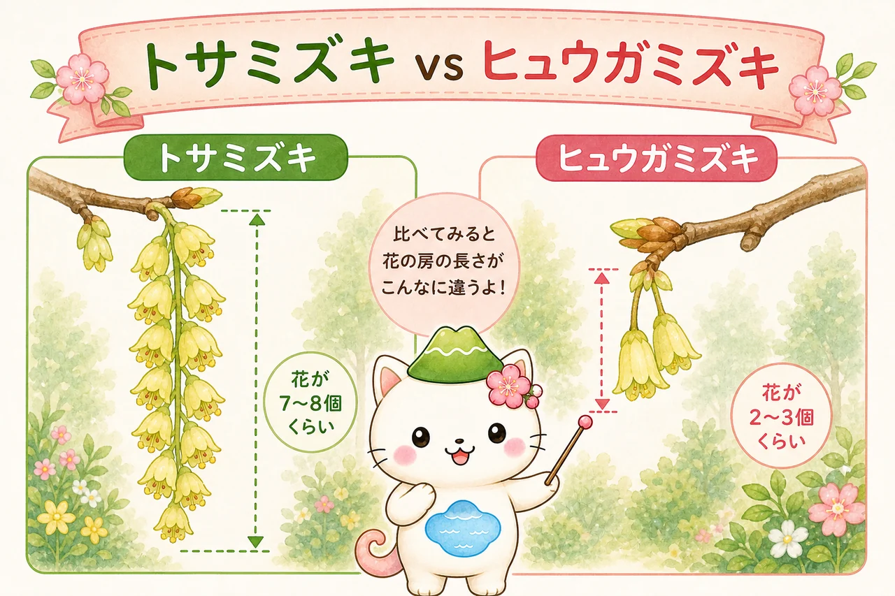

似てる木の見分け方
見た目が似ていて区別がつきにくい庭木を、見分け方とともに整理しました。花や実がない時期でも使える「葉の付き方（対生・互生）」や「樹皮・冬芽」などのポイントを重視しています。気になる組み合わせを選んでください。

🔍 見分けの3つのコツ
- 葉の付き方：枝に対して向かい合う「対生」か、互い違いの「互生」か。花がなくても使える基本。
- 冬の特徴：樹皮の模様や冬芽（つぼみ）の形は、その木ならではのサインになります。
- 花や実の細部：花の付き方・散り方、トゲや翼葉（よくよう）など、小さな違いに注目。
くらべる組み合わせ

01
キャラ vs イチイ
どちらもイチイ科の常緑針葉樹ですが、庭木としての扱いが異なります。

02
ヤマボウシ・ハナミズキ・サンシュユ
ミズキ科の落葉樹御三家。花（総苞片）と樹皮で見分けます。

03
ツゲ vs イヌツゲ
名前は似ていますが、全く別の科です。これが分かれば脱初心者。

04
ツツジ類の見分け方
ツツジ科ツツジ属は種類が多いですが、庭木でよく見るものの分類です。

05
モミジ類（カエデ類）
葉の切れ込みと品種による違いです。

06
ツバキ vs サザンカ
ツバキ科の似たもの同士。

07
コニファー類（針葉樹）
種類が膨大ですが、葉の形状で大きく3つに分けられます。

08
トネリコ vs シマトネリコ
庭木で「トネリコ」と呼ばれる場合、9割は「シマトネリコ」です。

09
柑橘類の見分け方
葉とトゲで見分けます。

10
バラ科（サクラ・モモ・ウメ）
「桜切る馬鹿、梅切らぬ馬鹿」と言われるように剪定特性も違います。

11
キンモクセイ vs ギンモクセイ
香りと葉の違い。

12
クロガネモチ vs オウゴンモチ
モチノキ科の常緑樹。葉の縁の色がポイントです。

13
シャラ vs ヒメシャラ
別名「ナツツバキ」。幹の美しさが魅力。

14
トサミズキ vs ヒュウガミズキ
早春に黄色い花を吊り下げる落葉低木。

15
ベリー類（低木果樹）
実のなる低木たち。形状の違い。